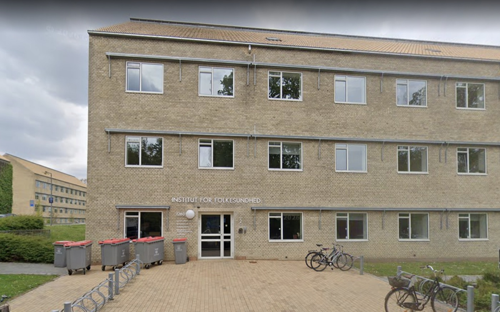
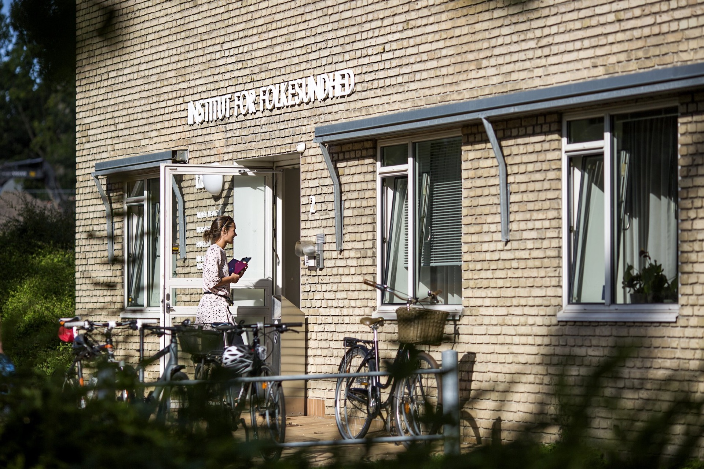
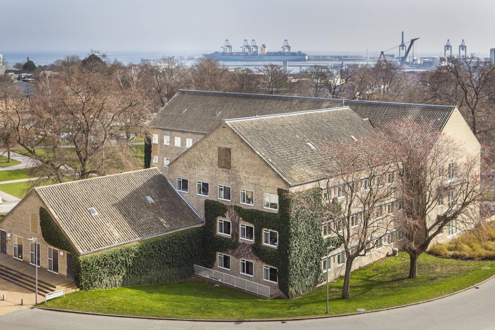

We have moved. NCRR is now located at the
Department of Public Health (Institut for Folkesundhed),
Aarhus University — Bartholins Allé 2, bygning 1260, 8000 Aarhus C.
We are no longer at the Fuglesangs Allé campus.
Address
National Centre for Register-based ResearchDepartment of Public Health (Institut for Folkesundhed)
Aarhus University
Bartholins Allé 2, bygning 1260
8000 Aarhus C, Denmark
Getting here
Aarhus light rail (Letbane): nearest stop
Universitetsparken, a few minutes' walk.
City buses toward the University Park campus stop at
Nobelparken / Universitetsparken.
Contact
Tel +45 8716 5312
arm.ncrr@au.dk
EAN 5798000418554



Directions
- From Aarhus Airport: take the airport bus towards Aarhus and get off at the Aarhus University stop on Nordre Ringgade. Walk south along Nordre Ringgade and turn onto Bartholins Allé — bygning 1260 is on your left, a few minutes' walk away.
- From the railway station (Aarhus H): take a city bus towards the University Park campus (stops: Nobelparken or Universitetsparken), or the light rail to the Universitetsparken stop. From there it is a short walk to Bartholins Allé 2.
- On foot or by bike: bygning 1260 sits on Bartholins Allé at the edge of the University Park, by Vennelystparken. The main entrance faces Bartholins Allé.